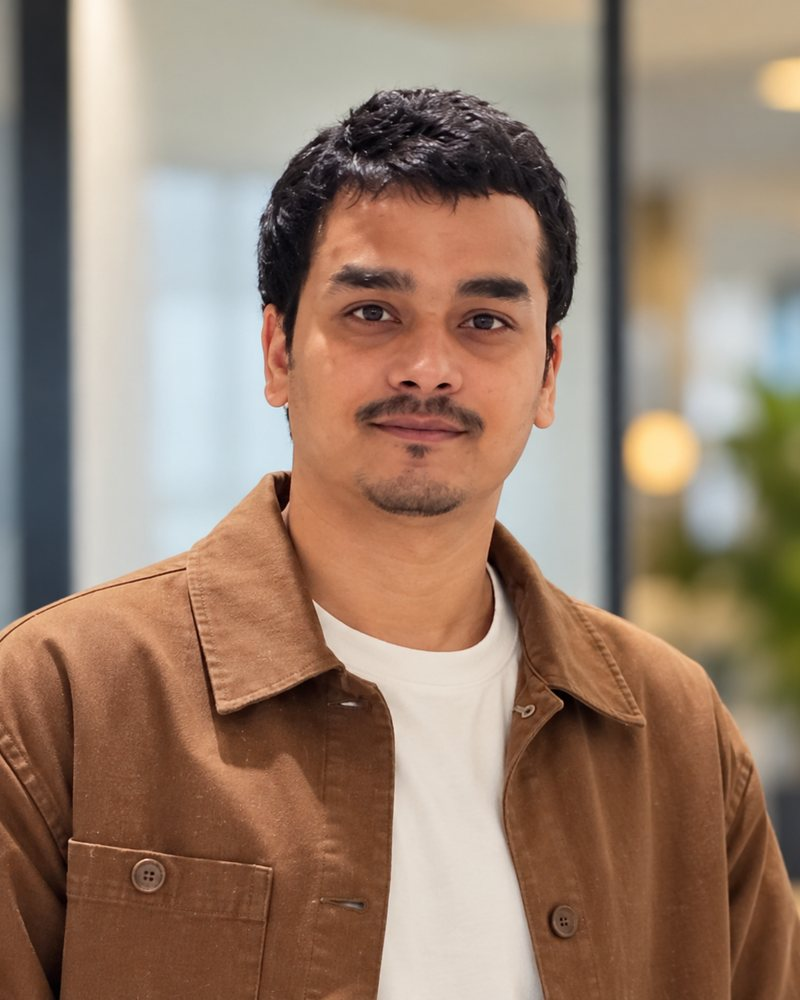

Dubai, UAE
I build the systems that move money across borders.
Senior Backend Engineer with technical leadership experience and 9+ years in software, 5+ of them building Java systems for HSBC, Citi and now Al Fardan Exchange. I've delivered 20+ bank and partner payment integrations, ISO 20022 messaging and the AANI–UPI instant-payments link for the India–UAE corridor.
- 9+ years
- in software engineering, 5+ in banking and payments
- 20+
- bank and partner payment integrations, in a network of 100+
- ~100
- ETL jobs migrated from Talend to Spring Batch
- 4
- ISO 20022 message types in production: pacs.008, camt.052, 053, 054
The life of a payment, and where I work on it
- 1
Receive
Inbound and outbound remittances arrive over AANI and the UPI IRP channel.
- 2
Parse
Handlers read
pacs.008andcamtmessages and map XML to JSON. - 3
Validate
Schema and business-rule checks, with every parsed and unparsed message logged.
- 4
Process
Kafka events drive each payment in real time, with idempotency, retries and dead-letter queues.
- 5
Reconcile
camt.053statements matched against transactions, with a full audit trail.

About me
I'm a backend engineer at Al Fardan Exchange in Dubai, working on payment integrations with banks and exchange partners around the world. I've delivered 20+ of them within a network of 100+, so money can move across countries and currencies reliably. A big part of that is the AANI–UPI integration, which I helped build from scratch to connect the UAE's instant-payments platform with India's UPI for real-time remittances.
I also have strong experience building batch jobs with Spring Batch. At LTIMindtree, on Citi's ASPEN trading platform, I led the migration of around 100 ETL jobs from Talend to Spring Batch with Autosys scheduling, alongside Kafka-based position management.
I'm full-stack too: I've built UI components in React for trading operations, worked with Angular, and shipped Android features for Volkswagen. Earlier I worked on HSBC's payment services through Synechron and started my career at Infosys.
I use AI tools like Claude Code and ChatGPT every day to design, write, test and review code faster, and I explore Generative AI beyond that, including a retrieval-augmented chat service on my GitHub.
I care about systems that don't lose data between two ledgers, and about code that the next engineer can read.
How I use AI in engineering
AI is part of my daily workflow, with the same review standards I apply to any code that touches money.
- Claude Code for exploring codebases, scaffolding services, refactoring and writing tests.
- ChatGPT for working through designs, edge cases and ISO 20022 message mappings.
- Generative AI in my own projects, such as a retrieval-augmented (RAG) chat service.
Selected work
All projectsAANI–UPI instant payments, India to UAE
A greenfield integration for real-time inbound and outbound remittances, with ISO 20022 message handling and Kafka-driven processing.
ASPEN position management and Spring Batch migration
Real-time position updates over Kafka for trading desks, and around 100 ETL jobs moved from Talend to Spring Batch with Autosys.
Move by Volkswagen
Android features and Spring Boot microservices on Azure for a connected-vehicle mobility platform.
Hiring for backend or payments?
Let's talk about what you're building. Notice period is negotiable.